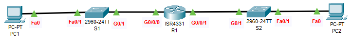

- Configure Basic Settings
- Configure and verify a Stateless DHCPv6 Server
- Configure and verify a Stateful DHCPv6 Server

| Device | Interface | IPv6 Address / Prefix | Default Gateway |
|---|---|---|---|
| R1 | G0/0/0 | 2001:DB8:ACAD:A::1/64 | NOT APPLICABLE |
| G0/0/1 | 2001:DB8:ACAD:B::1/64 | NOT APPLICABLE | |
| S1 | VLAN 1 | 2001:DB8:ACAD:A::2/64 | |
| S2 | VLAN 1 | 2001:DB8:ACAD:B::2/64 | |
| PC1 | NIC | Automatic | |
| PC2 | NIC | Automatic | |
Router>enable Router#configure terminal Router(config)#no ip domain-lookup Router(config)#hostname R1 R1(config)#ipv6 unicast-routing R1(config)#interface g0/0/0 R1(config-if)#ipv6 address 2001:DB8:ACAD:A::1/64 R1(config-if)#ipv6 address FE80::A link-local R1(config-if)#no shutdown R1(config-if)#interface g0/0/1 R1(config-if)#ipv6 address 2001:DB8:ACAD:B::1/64 R1(config-if)#ipv6 address FE80::B link-local R1(config-if)#no shutdown
R1(config)#ipv6 dhcp pool STATELESS R1(config-dhcpv6)#dns-server 2001:8:8::8 R1(config-dhcpv6)#domain-name stateless.com R1(config-dhcpv6)#exit R1(config)#interface g0/0/0 R1(config-if)#ipv6 nd other-config-flag R1(config-if)#ipv6 dhcp server STATELESS
R1(config-if)#ipv6 dhcp pool STATEFUL R1(config-dhcpv6)#address prefix 2001:DB8:ACAD:B::/64 R1(config-dhcpv6)#dns-server 2001:8:8::8 R1(config-dhcpv6)#domain-name stateful.com R1(config-dhcpv6)#exit R1(config)#interface g0/0/1 R1(config-if)#ipv6 dhcp server STATEFUL R1(config-if)#ipv6 nd managed-config-flag R1(config-if)#end R1# R1#copy run start
Switch>enable Switch#configure terminal Switch(config)#sdm prefer dual-ipv4-and-ipv6 default Switch(config)#exit Switch#reload System configuration has been modified. Save? [yes/no]:yes Proceed with reload? [confirm][Press Enter Here] [After reload] Switch>enable Switch#conf t Switch(config)#hostname S1 S1(config)#interface vlan 1 S1(config-if)#ipv6 address 2001:DB8:ACAD:A::2/64 S1(config-if)#ipv6 address FE80::1 link-local S1(config-if)#no shutdown S1(config-if)#end S1#copy run start
Switch>enable Switch#conf t Switch(config)#sdm prefer dual-ipv4-and-ipv6 default Switch(config)#exit Switch#reload System configuration has been modified. Save? [yes/no]:yes Proceed with reload? [confirm][press Enter Here] [After reload] Switch>enable Switch#conf t Switch(config)#hostname S2 S2(config)#interface vlan 1 S2(config-if)#ipv6 address 2001:DB8:ACAD:B::2/64 S2(config-if)#ipv6 address FE80::1 link-local S2(config-if)#no shutdown S2(config-if)#end S2#copy run start
IPv6 Configuration: Automatic
IPv6 Configuration: Automatic
R1# show ipv6 dhcp pool R1#show ipv6 dhcp binding R1#show ipv6 interface brief S1#show ipv6 interface brief S2#show ipv6 interface brief All devices will be able to ping each other using IPv6 Address.
Configured and verified stateless and stateful DHCPv6